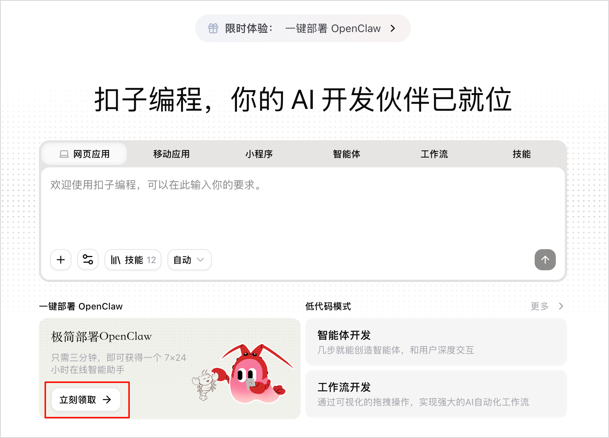

Method Loop
从部署到报告的六步闭环
演示不是单点功能，而是一条完整链路：先让系统能跑，再让测试可复现，最后把结果沉淀为可优化的报告。

System Design
一个家长画像 Agent，驱动一个真实服务 Agent
拖延、顶嘴、早恋焦虑、考试焦虑、同伴关系等高频问题。
按质疑、顾虑、追问方向生成 4 轮真实反应。
记录每轮输出质量、响应时间与关键话术。
自动汇总评分、优势、风险与下一步优化建议。
Evaluation
多维度评分：优势清楚，短板也清楚
结果显示，亲智聊在准确性、场景相关性、可操作性、同理心、逻辑与专业可信度上表现稳定，下一阶段重点优化个性化程度与响应时间。
15 个测试案例
60 条 AI 回复
12.9s 平均推理时间
Efficiency
增效说明
这套 Agent 团队系统的价值，不只是把测试做完，而是把人工重复劳动转成可规模化、可度量、可持续优化的智能流程。
测试周期从 1 天缩短至 2 小时，批量执行显著压缩等待和重复操作时间。
传统 AI 测试痛点
人工逐一输入问题、等待回答、逐句核对质量，测试节奏慢；边缘问题容易漏检，例如复杂追问、家长质疑和模糊输入；大量时间消耗在重复执行和人工判读上。
Agent 团队闭环
测试设计 Agent 生成覆盖核心和边缘场景的测试用例；执行 Agent 批量调用亲智聊 AI 完成完整 4 轮对话；校验 Agent 围绕 10 个维度自动打分、标记问题并输出报告。
数据化提效结果
以 15 个典型案例测试为例，测试周期从 1 天缩短至 2 小时，协作人力从 3 人减少至 1 人，系统错误检测率提升至 90%，能更稳定发现漏检和边缘问题。
家庭教育场景覆盖
覆盖孩子沉迷游戏、不想上学、亲子沟通冲突、学习辅导困难、情绪管理、家长质疑、持续追问、模糊输入、个性化建议和持续指导等场景，可沉淀为可复用测试资产。
下一步优化方向
从“发现问题”推进到“辅助优化”：新增优化 Agent 自动调整话术，引入情感分析量化回答温度，并建设定制用例库，支撑亲智聊 AI 持续迭代。
Results
结果呈现：15 个典型家庭教育场景，完整 4 轮对话校验
每个案例都带有测试目的、家长追问、AI 回复、响应时间和维度评分，既能看结果，也能追溯过程。
Operation Demo
操作演示：从配置到报告的真实效果
按操作过程文档重新整理为 6 个演示步骤：每一步都说明要做什么、为什么做、看哪张截图，评委可以顺着页面完整复现这套方法。
Next Iteration
优化路线已经明确
结论
当前提示词整体表现优秀，优化后预期可提升到 4.9-4.95/5。
核心优势是共情能力强、育儿知识准确、建议可落地、结构清晰，并能主动邀请后续反馈。 下一步把个性化信息采集和首轮响应速度拉上来，方法价值会更完整。